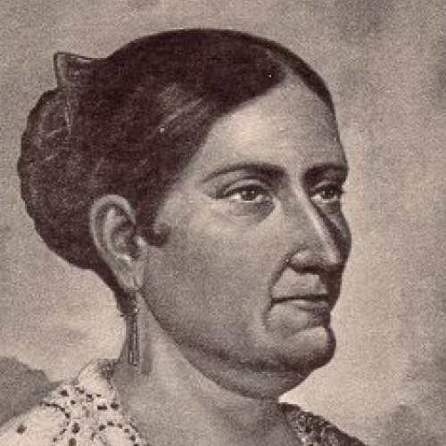
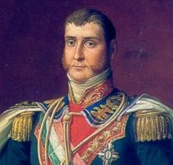

Miguel Hidalgo y Costilla: Padre de la Patria, dio el Grito de Dolores la madrugada del 16 de septiembre de 1810 para iniciar la lucha.
Ignacio Allende: Militar criollo y líder insurgente que participó en la planeación y en las primeras batallas junto a Hidalgo.

Josefa Ortiz de Domínguez: Conocida como La Corregidora, alertó a los insurgentes sobre el descubrimiento de la conspiración, apoyando el inicio del movimiento.

Agustín de Iturbide y Vicente Guerrero: Encabezaron la entrada del Ejército Trigarante a la Ciudad de México el 27 de septiembre de 1821, sellando la independencia.